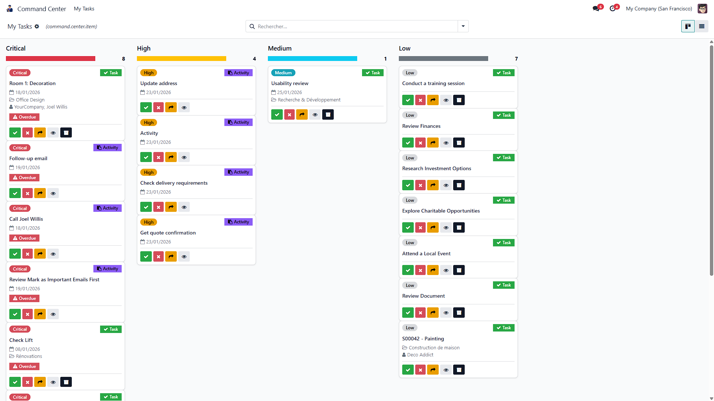

Critical - Overdue items and deadlines within 24 hours
High - Items due within 3 days that need attention
Medium - Items due within the week
Low - Items with distant deadlines or no deadline
Stop switching between apps. Command Center Lite aggregates all your Odoo Activities (calls, meetings, to-dos) and Project Tasks into a single Kanban board.
Each card shows the source type, deadline, associated project or partner, and provides quick actions to manage your workload efficiently.
Mark as Done - Complete activities and tasks instantly
Cancel - Dismiss items you no longer need
Delegate - Transfer to a colleague
View Original - Open the source record
Archive - Hide tasks from view
Today, Overdue, This Week, No Deadline
Activities only, Tasks only, Critical priority, High priority
Priority, Type, Deadline, Project, Partner
Get a clear overview of all pending work across your organization
Manage multiple client projects and activities efficiently
Track tasks and activities without constant app switching
Take your productivity to the next level with advanced features:
Aggregate CRM opportunities alongside tasks and activities
See all your meetings in the unified view
More filtering options and custom views
Odoo 18 Community Edition Odoo 18 Enterprise Edition Odoo.sh
base - Odoo Core
|
mail - Activities support
|
project - Project tasks support
This module is licensed under OPL-1 (Odoo Proprietary License v1.0).
Copyright 2025 PlantBasedStudio.